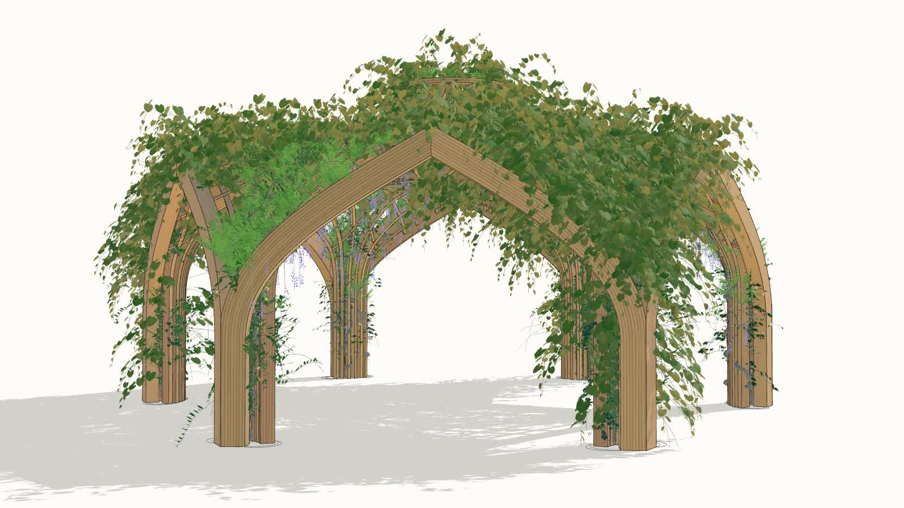

Room through time / Rendering comparison
One room. One orbit.
Compare the existing film with live timber and a baked plant layer. Switching keeps the same moment. Only the selected version runs.

Measured in this browser
What changes?
Compare measurements
| Version | First frame | Assets | Mean callback rate | Stalls | Dropped / decoded |
|---|
Startup includes local preparation and loading. Revisited files may already be cached. Display callbacks are not GPU timings or unique film frames. These readings describe this device and connection; use an empty cache and the same network settings for a loading comparison.
Look closely. Watch the planting against the timber edges, the gaps through the canopy and the shadows on the floor. Pause and switch versions at the same moment to check alignment.
Scope. A separate rendering experiment using the existing growth scenario and programmed camera. The presentation slide is unchanged. Plant growth and material ageing remain illustrative model outputs.